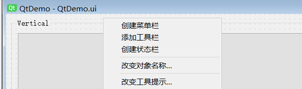
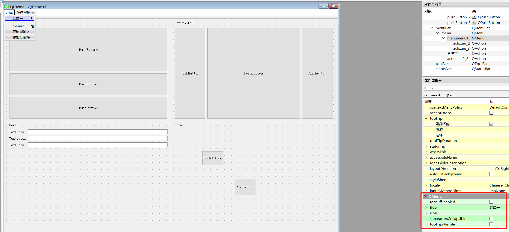
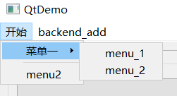
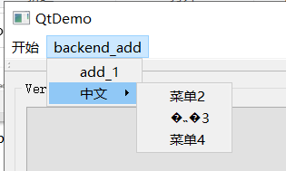
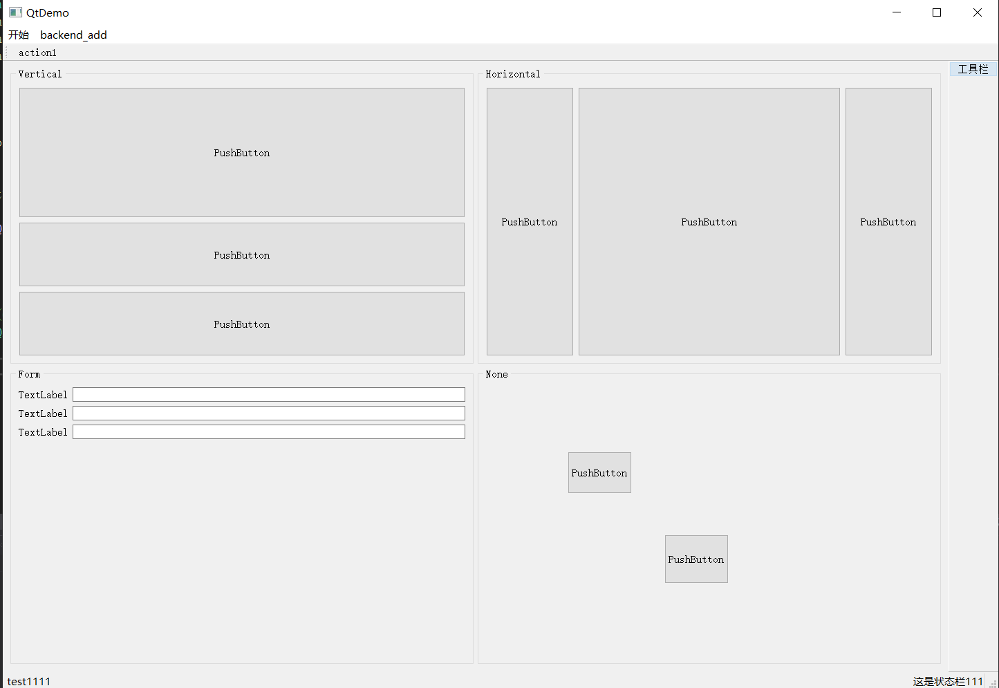

Qt 系列（三）——窗体
前言
这篇来认识下Qt中的三个窗口类，MainWindow、Widget、Dialog。
MainWindow
这个作为一个程序的主窗口，拥有menu菜单栏、tool工具栏、status状态栏、任务栏右侧托盘等，相当于是一个大的窗体架子。
一个mainwindow中可以放置多个widget，下一篇聊下多界面的切换。
这里可以新建的qt工程选MainWindow，或者在原来的demo工程上，可以再重新添加回初始的菜单栏、工具栏、状态栏来做下测试。
QMenu

新建完这些栏，双击菜单栏开始新建菜单，编辑菜单，菜单名称选中对应菜单，在属性栏中找QMenu，在这一区域设置text属性可以修改成中文。

当然也可以通过程序里来动态添加菜单，代码如下
1 | |
这里穿插下中文，当然这主要是在windows上会出现中文乱码比较频繁，因为系统默认是GB2312，vs也是默认GB2312（肯定是可以修改utf-8，只是懒得改），这里有几个方式显示中文，也就是上面代码展示的，回头找时间鼓捣完中文这块单独再写，常用的方式就是除了tr，这玩意儿确实是为了多语言，需要先整理好多语言的对应文件。
来看下运行后菜单的效果。


乱码的情况上面也说了，tr是为了国际化使用的，在没有设置编码格式的时候，编辑器也不知道要用哪种。
QToolBar
这个因为没咋用过，也试了下发下从designer这没法往里丢控件，看来是只能通过代码去添加Action了,不过总的来看这玩意儿是个DockPanel（跟vs里这窗口栏那窗口栏一样，拖哪自己定）。
1 | |
QStatusBar
状态栏这个，像大多数应用程序需要有个提示进度啊或者提示信息之类的，就可以直接在这个区域丢控件了。
1 | |
最终所有的设置完成后，效果如下。

QWidget
窗体小部件，它是所有窗口界面的基类，接收用户交互，界面展示，所有子控件可以放在widget下，如果细看的话，本身选MainWindow默认会有个Widget名字叫centralWidget。
我们来新建个测试用的Widget，然后给这个新建的ui里只放个Label，内容自己随便写，之后回到MainWindow的头文件，声明这个Widget，在cpp里new一个，隐藏掉原有的centralWidget（当然不隐藏也可以，两个Widget会同时显示，不好看）。
1 | |
1 | |
显示的效果就不再截图了，就是在当前的Window展示另一个Widget的ui界面，做界面切换也可以采用这种显示隐藏的方式来做。
QDialog
对话框一般是用于与用户交互，比如消息对话框（提示框、确认框等）、文件选择、颜色选择或者是常用的像弹框表单啊详情界面啊之类的。
对话框分为模态和非模态（说白点儿就是让不让你点别的地方）。
新建个Dialog试下效果，之后还是给Widget那个类似，声明然后实现。
如果不是在dialog类的初始化就做显示，这里new完之后还是需要手动show()一下，所有的Widget都有show(),hide()等方法，具体使用可以自己摸索。
1 | |
Widget常用方法
比如说，不想要标题栏，任务栏不显示，置顶等等，可以参照下面。
1 | |
| WindowsFlags | 效果 |
|---|---|
| Qt::FramelessWindowHint | 去掉标题栏 |
| Qt::Tool | 任务栏不显示 |
| Qt::WindowStaysOnTopHint | 置顶 |
| Qt::WindowMinimizeButtonHint | 显示最小化按钮 |
| Qt::WindowMaximizeButtonHint | 显示最大化按钮 |
| Qt::WindowMinMaxButtonsHint | 显示最小最大化按钮 |
| Qt::WindowCloseButtonHint | 显示关闭按钮 |
其他的后续用到再补充吧。
小结
基本上窗体这块儿就聊这么多吧，每个里面其实展开来搞还是有一大堆东西，不过三个类有区别但是毕竟都是同父，相似之处还是挺多，鼓捣时间长了就熟了。